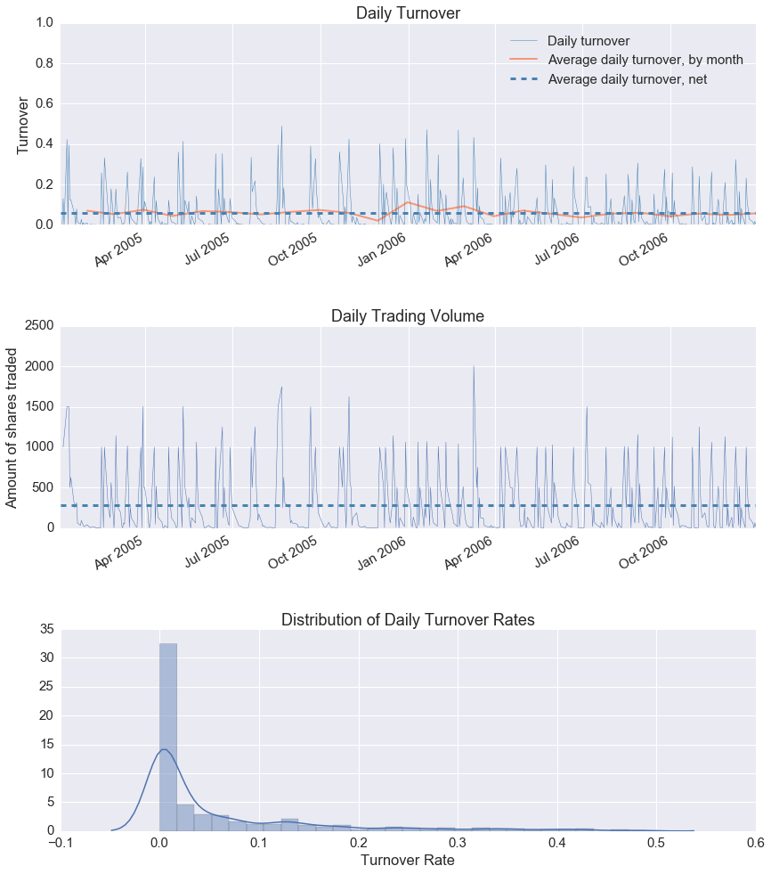

Pyfolio Integration¶
The integration of a portfolio tool, namely pyfolio, came up with in
Ticket #108.
A first look at the tutorial deemed it as difficult, given the tight
integration amongst zipline and pyfolio, but the sample test data
available with pyfolio for some other uses is actually pretty useful to
decode what’s running behind the scenes and hence the wonder of integration.
Most of the pieces were already in-place in backtrader:
- Analyzer infrastructure
- Children analyzer
- A TimeReturn analyzer
Only a main PyFolio analyzer and 3 easy children analyzer are
needed. Plus a method that relies on one of the dependencies already needed by
pyfolio which is pandas.
The most challenging part ... “getting all the dependencies right”.
- Update of
pandas- Update of
numpy- Update of
scikit-lean- Update of
seaborn
Under Unix-like environments with a C compiler it’s all about time. Under Windows and even with the specific Microsoft compiler installed (in this case the chain for Python 2.7) things failed. But a well known site with a collection of up-to-date packages for Windows helped. Visit it if you ever need it:
The integration wouldn’t be complete if it wasn’t tested and that’s why the usual sample is as always present.
No PyFolio¶
The sample uses random.randint to decide when to buy/sell, so this is
simply a check that things are working:
$ ./pyfoliotest.py --printout --no-pyfolio --plot
Output:
Len,Datetime,Open,High,Low,Close,Volume,OpenInterest
0001,2005-01-03T23:59:59,38.36,38.90,37.65,38.18,25482800.00,0.00
BUY 1000 @%23.58
0002,2005-01-04T23:59:59,38.45,38.54,36.46,36.58,26625300.00,0.00
BUY 1000 @%36.58
SELL 500 @%22.47
0003,2005-01-05T23:59:59,36.69,36.98,36.06,36.13,18469100.00,0.00
...
SELL 500 @%37.51
0502,2006-12-28T23:59:59,25.62,25.72,25.30,25.36,11908400.00,0.00
0503,2006-12-29T23:59:59,25.42,25.82,25.33,25.54,16297800.00,0.00
SELL 250 @%17.14
SELL 250 @%37.01

There a 3 datas and several buy and sell operations are randomly chosen and scattered over the 2 year default life of the test run
A PyFolio run¶
pyfolio things work well when running inside a Jupyter Notebook including
inline plotting. Here is the notebook
Note
runstrat gets here [] as argument to run with default arguments
and skip arguments passed by the notebook itself
%matplotlib inline
from __future__ import (absolute_import, division, print_function,
unicode_literals)
import argparse
import datetime
import random
import backtrader as bt
class St(bt.Strategy):
params = (
('printout', False),
('stake', 1000),
)
def __init__(self):
pass
def start(self):
if self.p.printout:
txtfields = list()
txtfields.append('Len')
txtfields.append('Datetime')
txtfields.append('Open')
txtfields.append('High')
txtfields.append('Low')
txtfields.append('Close')
txtfields.append('Volume')
txtfields.append('OpenInterest')
print(','.join(txtfields))
def next(self):
if self.p.printout:
# Print only 1st data ... is just a check that things are running
txtfields = list()
txtfields.append('%04d' % len(self))
txtfields.append(self.data.datetime.datetime(0).isoformat())
txtfields.append('%.2f' % self.data0.open[0])
txtfields.append('%.2f' % self.data0.high[0])
txtfields.append('%.2f' % self.data0.low[0])
txtfields.append('%.2f' % self.data0.close[0])
txtfields.append('%.2f' % self.data0.volume[0])
txtfields.append('%.2f' % self.data0.openinterest[0])
print(','.join(txtfields))
# Data 0
for data in self.datas:
toss = random.randint(1, 10)
curpos = self.getposition(data)
if curpos.size:
if toss > 5:
size = curpos.size // 2
self.sell(data=data, size=size)
if self.p.printout:
print('SELL {} @%{}'.format(size, data.close[0]))
elif toss < 5:
self.buy(data=data, size=self.p.stake)
if self.p.printout:
print('BUY {} @%{}'.format(self.p.stake, data.close[0]))
def runstrat(args=None):
args = parse_args(args)
cerebro = bt.Cerebro()
cerebro.broker.set_cash(args.cash)
dkwargs = dict()
if args.fromdate:
fromdate = datetime.datetime.strptime(args.fromdate, '%Y-%m-%d')
dkwargs['fromdate'] = fromdate
if args.todate:
todate = datetime.datetime.strptime(args.todate, '%Y-%m-%d')
dkwargs['todate'] = todate
data0 = bt.feeds.BacktraderCSVData(dataname=args.data0, **dkwargs)
cerebro.adddata(data0, name='Data0')
data1 = bt.feeds.BacktraderCSVData(dataname=args.data1, **dkwargs)
cerebro.adddata(data1, name='Data1')
data2 = bt.feeds.BacktraderCSVData(dataname=args.data2, **dkwargs)
cerebro.adddata(data2, name='Data2')
cerebro.addstrategy(St, printout=args.printout)
if not args.no_pyfolio:
cerebro.addanalyzer(bt.analyzers.PyFolio, _name='pyfolio')
results = cerebro.run()
if not args.no_pyfolio:
strat = results[0]
pyfoliozer = strat.analyzers.getbyname('pyfolio')
returns, positions, transactions, gross_lev = pyfoliozer.get_pf_items()
if args.printout:
print('-- RETURNS')
print(returns)
print('-- POSITIONS')
print(positions)
print('-- TRANSACTIONS')
print(transactions)
print('-- GROSS LEVERAGE')
print(gross_lev)
import pyfolio as pf
pf.create_full_tear_sheet(
returns,
positions=positions,
transactions=transactions,
gross_lev=gross_lev,
live_start_date='2005-05-01',
round_trips=True)
if args.plot:
cerebro.plot(style=args.plot_style)
def parse_args(args=None):
parser = argparse.ArgumentParser(
formatter_class=argparse.ArgumentDefaultsHelpFormatter,
description='Sample for pivot point and cross plotting')
parser.add_argument('--data0', required=False,
default='../../datas/yhoo-1996-2015.txt',
help='Data to be read in')
parser.add_argument('--data1', required=False,
default='../../datas/orcl-1995-2014.txt',
help='Data to be read in')
parser.add_argument('--data2', required=False,
default='../../datas/nvda-1999-2014.txt',
help='Data to be read in')
parser.add_argument('--fromdate', required=False,
default='2005-01-01',
help='Starting date in YYYY-MM-DD format')
parser.add_argument('--todate', required=False,
default='2006-12-31',
help='Ending date in YYYY-MM-DD format')
parser.add_argument('--printout', required=False, action='store_true',
help=('Print data lines'))
parser.add_argument('--cash', required=False, action='store',
type=float, default=50000,
help=('Cash to start with'))
parser.add_argument('--plot', required=False, action='store_true',
help=('Plot the result'))
parser.add_argument('--plot-style', required=False, action='store',
default='bar', choices=['bar', 'candle', 'line'],
help=('Plot style'))
parser.add_argument('--no-pyfolio', required=False, action='store_true',
help=('Do not do pyfolio things'))
import sys
aargs = args if args is not None else sys.argv[1:]
return parser.parse_args(aargs)
runstrat([])
Entire data start date: 2005-01-03
Entire data end date: 2006-12-29
Out-of-Sample Months: 20
Backtest Months: 3
| Performance statistics | All history | Backtest | Out of sample |
|---|---|---|---|
| annual_return | 0.06 | -0.05 | 0.08 |
| annual_volatility | 0.09 | 0.09 | 0.10 |
| sharpe_ratio | 0.62 | -0.55 | 0.83 |
| calmar_ratio | 0.78 | -1.13 | 1.09 |
| stability_of_timeseries | 0.75 | -0.47 | 0.70 |
| max_drawdown | -0.07 | -0.04 | -0.07 |
| omega_ratio | 1.16 | 0.88 | 1.22 |
| sortino_ratio | 0.97 | -0.76 | 1.33 |
| skew | 1.24 | 0.35 | 1.37 |
| kurtosis | 12.72 | 5.66 | 13.59 |
| tail_ratio | 0.87 | 0.46 | 0.91 |
| common_sense_ratio | 0.91 | 0.43 | 0.98 |
| information_ratio | -0.02 | 0.03 | -0.04 |
| alpha | 0.03 | -0.02 | 0.03 |
| beta | 0.31 | 0.25 | 0.33 |
| Worst Drawdown Periods | net drawdown in % | peak date | valley date | recovery date | duration |
|---|---|---|---|---|---|
| 0 | 7.06 | 2005-07-11 | 2006-04-17 | 2006-05-24 | 228 |
| 1 | 5.53 | 2005-02-18 | 2005-05-11 | 2005-05-16 | 62 |
| 2 | 3.33 | 2006-07-03 | 2006-07-13 | 2006-09-21 | 59 |
| 3 | 2.11 | 2006-09-25 | 2006-10-03 | 2006-10-24 | 22 |
| 4 | 2.11 | 2006-10-31 | 2006-12-07 | 2006-12-19 | 36 |
[-0.012 -0.025]
| Stress Events | mean | min | max |
|---|---|---|---|
| Low Volatility Bull Market | 0.02% | -2.68% | 4.85% |
| Top 10 long positions of all time | max |
|---|---|
| Data2 | 93.59% |
| Data0 | 80.42% |
| Data1 | 34.47% |
| Top 10 short positions of all time | max |
|---|
| Top 10 positions of all time | max |
|---|---|
| Data2 | 93.59% |
| Data0 | 80.42% |
| Data1 | 34.47% |
| All positions ever held | max |
|---|---|
| Data2 | 93.59% |
| Data0 | 80.42% |
| Data1 | 34.47% |
D:drobinWinPython-64bit-2.7.10.3python-2.7.10.amd64libsite-packagespyfolioplotting.py:1210: FutureWarning: .resample() is now a deferred operation use .resample(...).mean() instead of .resample(...) **kwargs)
| Summary stats | All trades | Long trades |
|---|---|---|
| Total number of round_trips | 661.00 | 661.00 |
| Percent profitable | 0.53 | 0.53 |
| Winning round_trips | 350.00 | 350.00 |
| Losing round_trips | 305.00 | 305.00 |
| Even round_trips | 6.00 | 6.00 |
| PnL stats | All trades | Long trades |
|---|---|---|
| Total profit | $5675.87 | $5675.87 |
| Gross profit | $21571.73 | $21571.73 |
| Gross loss | $-15895.86 | $-15895.86 |
| Profit factor | $1.36 | $1.36 |
| Avg. trade net profit | $8.59 | $8.59 |
| Avg. winning trade | $61.63 | $61.63 |
| Avg. losing trade | $-52.12 | $-52.12 |
| Ratio Avg. Win:Avg. Loss | $1.18 | $1.18 |
| Largest winning trade | $1024.99 | $1024.99 |
| Largest losing trade | $-1155.00 | $-1155.00 |
| Duration stats | All trades | Long trades |
|---|---|---|
| Avg duration | 17 days 00:00:00.001512 | 17 days 00:00:00.001512 |
| Median duration | 16 days 00:00:00 | 16 days 00:00:00 |
| Avg # round_trips per day | 11.80 | 11.80 |
| Avg # round_trips per month | 247.88 | 247.88 |
| Return stats | All trades | Long trades |
|---|---|---|
| Avg returns all round_trips | 0.02% | 0.02% |
| Avg returns winning | 0.12% | 0.12% |
| Avg returns losing | -0.10% | -0.10% |
| Median returns all round_trips | 0.00% | 0.00% |
| Median returns winning | 0.02% | 0.02% |
| Median returns losing | -0.02% | -0.02% |
| Largest winning trade | 2.11% | 2.11% |
| Largest losing trade | -2.37% | -2.37% |
| Symbol stats | Data0 | Data1 | Data2 |
|---|---|---|---|
| Avg returns all round_trips | -0.02% | 0.01% | 0.06% |
| Avg returns winning | 0.12% | 0.05% | 0.19% |
| Avg returns losing | -0.14% | -0.04% | -0.14% |
| Median returns all round_trips | -0.00% | 0.00% | 0.01% |
| Median returns winning | 0.03% | 0.01% | 0.05% |
| Median returns losing | -0.02% | -0.01% | -0.04% |
| Largest winning trade | 1.91% | 0.71% | 2.11% |
| Largest losing trade | -2.37% | -0.64% | -0.99% |
| Profitability (PnL / PnL total) per name | pnl |
|---|---|
| symbol | |
| Data2 | 1.11% |
| Data1 | 0.14% |
| Data0 | -0.25% |
<matplotlib.figure.Figure at 0x23982b70>

Usage of the sample:
$ ./pyfoliotest.py --help
usage: pyfoliotest.py [-h] [--data0 DATA0] [--data1 DATA1] [--data2 DATA2]
[--fromdate FROMDATE] [--todate TODATE] [--printout]
[--cash CASH] [--plot] [--plot-style {bar,candle,line}]
[--no-pyfolio]
Sample for pivot point and cross plotting
optional arguments:
-h, --help show this help message and exit
--data0 DATA0 Data to be read in (default:
../../datas/yhoo-1996-2015.txt)
--data1 DATA1 Data to be read in (default:
../../datas/orcl-1995-2014.txt)
--data2 DATA2 Data to be read in (default:
../../datas/nvda-1999-2014.txt)
--fromdate FROMDATE Starting date in YYYY-MM-DD format (default:
2005-01-01)
--todate TODATE Ending date in YYYY-MM-DD format (default: 2006-12-31)
--printout Print data lines (default: False)
--cash CASH Cash to start with (default: 50000)
--plot Plot the result (default: False)
--plot-style {bar,candle,line}
Plot style (default: bar)
--no-pyfolio Do not do pyfolio things (default: False)


{kind=link}
{kind=link}
{kind=link}
{kind=link}